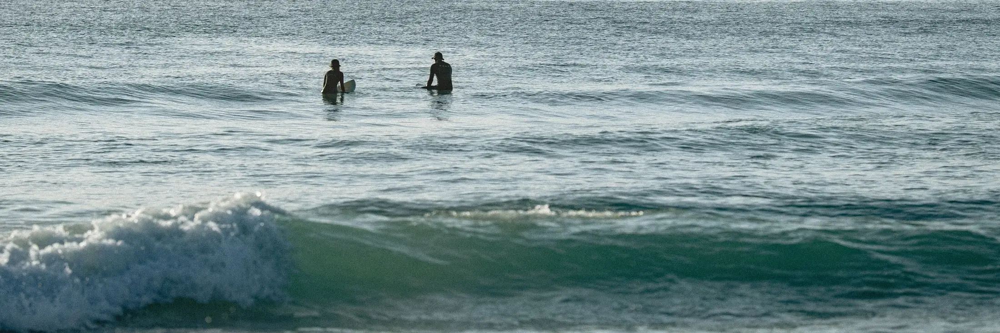

Descubra duas casas acolhedoras onde cada espaço foi cuidadosamente preparado para lhe oferecer conforto e pensado para viver o Algarve.
Acreditamos que o turismo pode coexistir em harmonia com a natureza. Por isso, incentivamos práticas simples que ajudam a preservar este lugar único.
Um refúgio tranquilo para abrandar o ritmo. Pensada para quem valoriza simplicidade, conforto e momentos de verdadeira desconexão.
Um quarto para até 2 hóspedes
Mínimo 3 noites
Check-in 15h | Check-out 11h
Animais bem-vindos (extra de 20€ para limpeza)
Verificar disponibilidadeEspaço para reunir, descansar e criar memórias. Ideal para famílias ou grupos que procuram uma estadia descontraída perto da natureza.
Dois quartos para até 4 hóspedes
Mínimo 3 noites
Check-in 15h | Check-out 11h
Animais bem-vindos (extra de 20€ para limpeza)
Verificar disponibilidadeUma coleção de lugares, experiências e pequenos momentos que tornam a nossa região tão acolhedora e típica.
De praias selvagens a aldeias tranquilas, descubra os lugares que merecem o seu tempo.

Não há pressa nenhuma. Comece com um café quente e algo acabado de sair do forno.
Manhãs sem pressaComida portuguesa reconfortante e um ambiente descontraído para uma refeição em conjunto.
Perguntas frequentes a que teremos todo o gosto em responder.